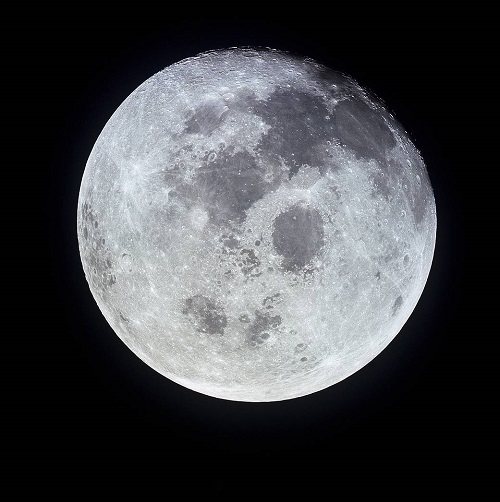
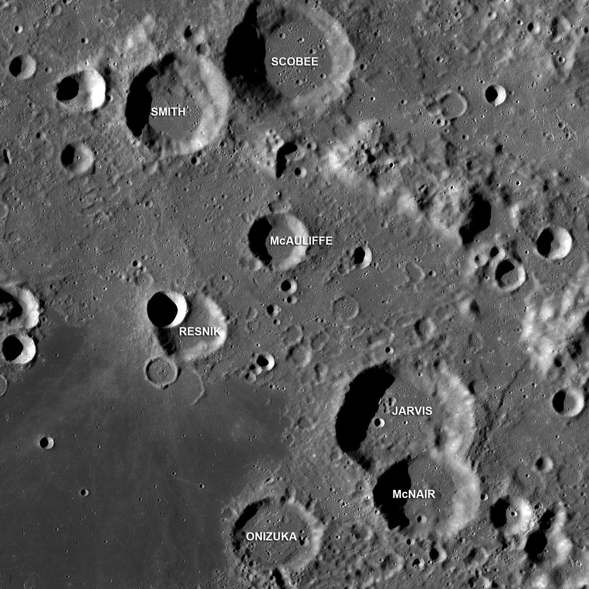
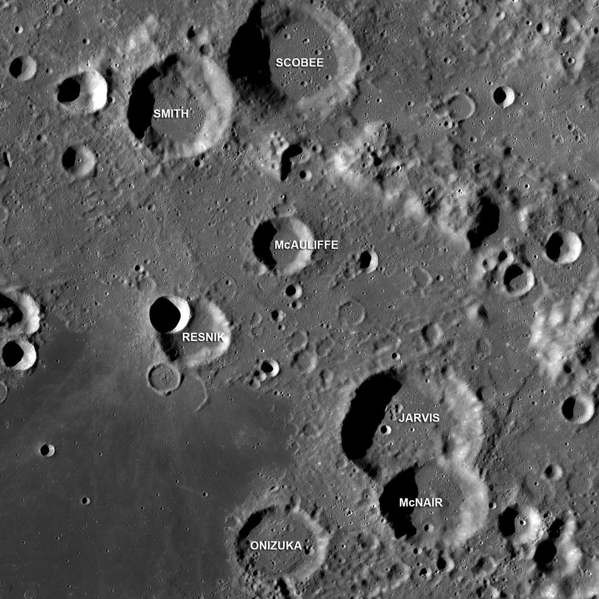

The Moon
The moon is an astronomical body that orbits our planet, Earth
A Little Introduction on the Moon
Without our moon, life on Earth would be drastically different. The moon moderates the Earth's wobble on its axis. This helps give us a stable climate, in comparison to some other planets. Scientists believe the moon was likely formed after a collision between Earth and another celestial body.Facts About the Moon
| Radius | 1,079.6 miles | 1,737.5 km |
|---|---|---|
| Distance from Earth | 238,855 miles | 384,400 km |
| Sidereal Orbit Period | 27.322 Earth Days | 0.074803559 Earth Years |
| Orbit Circumference | 2,413,402.16 km | 2,413,402,160 m |
| Mass | 73,476,730,924,573,500,000,000 kg | 73,476,730,924,573,499,392 MT |
| Surface Area | 14,647,439.75 square miles | 37,936,694,799,363 square meters |
| Surface Temperature | -387/253 °F | -215158.33333°C |
 
